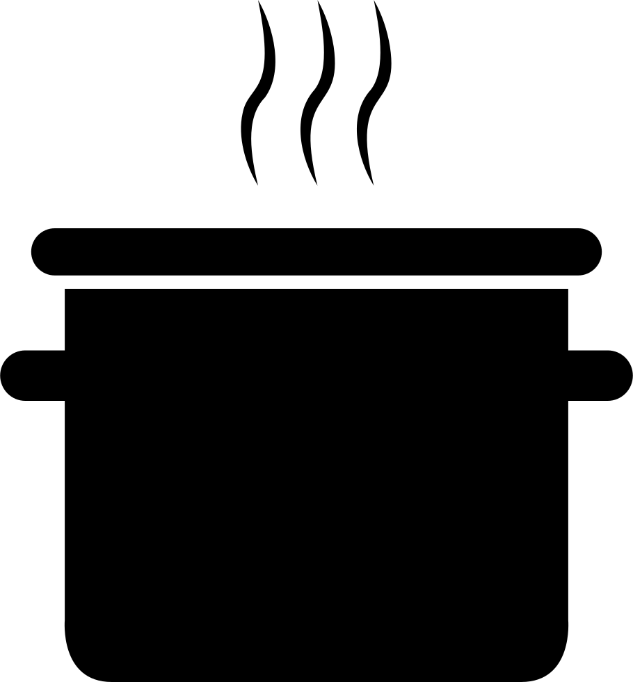

tiempo de preparacion:
20 minutos.
porciones:

para 2 personas.
ingredientes:
- 2 piezas de aguacate
- 1/2 cebolla finamente picada
- 1 manojo de cilantro
- 1 pieza (o lonja) de atún en rebanadas
- 250 gramos de queso crema
- 250 gramos de jitomate deshidratado
- 250 mililitros de leche
preparacion:
- Mezclar el aguacate, el cilantro y la cebolla para hacer un guacamole.
- Cortar la baguette por la mitad y retirar el migajón.
- Calentar la baguette por 5 minutos a 150°C
- Untar el aguacate en ambos lados de la baguette.
- Colocar las rebanadas de atún sobre el aguacate a lo largo de la baguette.
- Mezclar la leche, tomate deshidratado, queso crema hasta lograr una mezcla homogénea.
- Colocar la mezcla sobre cada rebanada de atún con una cuchara.
si quieres descargar la reseta te dejo el archivo aqui abajo